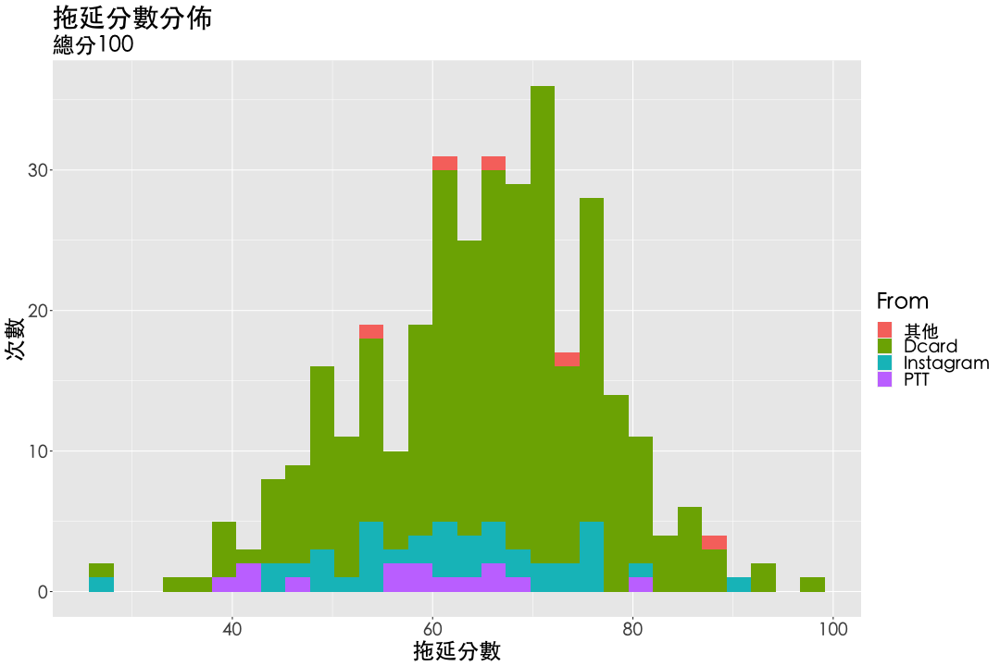

一般人會使用以下的陳述句來形容自己。請判斷您與以下每一個陳述句的符合程度。 1. 我經常在做我幾天前就想做的事情 非常不符合 不符合 普通 符合 非常符合 2. 直到快要交作業前我才會寫它 非常不符合 不符合 普通 符合 非常符合 3. 當我看完圖書館借來的書後，不管是否到期，我都會馬上歸還 非常不符合 不符合 普通 符合 非常符合 4. 每當早上起床時間一到，我幾乎都馬上起床 非常不符合 不符合 普通 符合 非常符合 5. 在我寫完信後，會過個幾天才寄出 非常不符合 不符合 普通 符合 非常符合 6. 我一般都是立刻回撥電話 非常不符合 不符合 普通 符合 非常符合 7. 即使是很簡單的工作，我也很少在幾天內完成 非常不符合 不符合 普通 符合 非常符合 8. 我經常很快速地做出決定 非常不符合 不符合 普通 符合 非常符合 9. 我通常會延遲我必須要做的工作 非常不符合 不符合 普通 符合 非常符合 10. 我經常需要很匆忙地趕作業才得以準時完成它 非常不符合 不符合 普通 符合 非常符合 11. 當準備要外出時，我很少在最後一刻才發現有什麼事情必須去做 非常不符合 不符合 普通 符合 非常符合 12. 在為一些有截止期限的事情做準備時，我經常浪費時間做其他事 非常不符合 不符合 普通 符合 非常符合 13. 我喜歡提前赴約 非常不符合 不符合 普通 符合 非常符合 14. 我經常在作業指派後沒多久就開始做作業 非常不符合 不符合 普通 符合 非常符合 15. 我經常比必須完工的時間更早完成工作 非常不符合 不符合 普通 符合 非常符合 16. 我總是在最後一刻才去買生日禮物或聖誕禮物 非常不符合 不符合 普通 符合 非常符合 17. 即使是必需品，我也經常到最後一刻才買 非常不符合 不符合 普通 符合 非常符合 18. 我經常能完成我一天中計畫好要做的所有事 非常不符合 不符合 普通 符合 非常符合 19. 我一直在說「我明天會做」 非常不符合 不符合 普通 符合 非常符合 20. 在晚上休息之前，我通常會先安頓好所有必須做的事情 非常不符合 不符合 普通 符合 非常符合 找找看你的分數在哪裡？(下為344人常模樣本)  各向度解釋 向度 解釋 Delay 事情絕不會第一時間處理，一定先放著一陣子，以為跟酒一樣越放越香，直到快臭酸才想處理。 Poor Time Management 時間管理很差，應該向羅志祥學習。 Until Deadline 總是死到臨頭才開始要做，不見棺材不掉淚類型，越過死線只是家常便飯。 Slow 慢慢來比較快，但其實沒有，慢慢來就是拖。